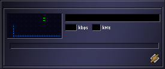
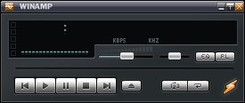
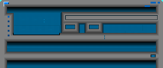
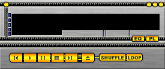
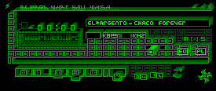
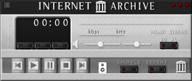
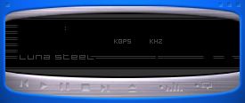
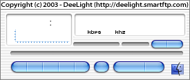
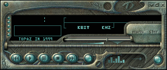

Music for your own collections,
ported to your iPhone.
// what it is
Built for the people who never threw out their MP3 folders. The CD ripper who filled three external drives in 2005. The Napster-era curator with a meticulous "Best Of 2003" directory. The audio-archivist who treats a hard drive like a library, not a cache.
HarmonIQ plays those files — straight off your drive, on your iPhone — through a player that looks like it was beamed in from 1999, with a 2026 brain bolted on top.
// philosophy
You own your music. Not a streaming service that can pull a license tomorrow. Not a cloud locker that needs an account and a subscription. The files on your drive — the ones you ripped, downloaded, traded, paid for — those are yours, and HarmonIQ treats them that way.
You own your playlist algorithm. Smart Play's rule-based modes are pure functions in SmartPlay.swift — read them, fork them, replace them. The AI modes (Vibe Match, Storyteller, Sonic Contrast) prefer Apple Intelligence's on-device foundation model when available: your library never leaves your phone.
You own your taste. No engagement metrics, no recommendation graph, no listening history shipped off for ad targeting. The "algorithm" is a 200-line Swift file you can audit in an afternoon.
// portability
Plug a USB-C SSD into your iPhone with a few thousand albums on it. Open HarmonIQ. Play. No connection needed — not at index time, not at playback time, not even for AI curation when Apple Intelligence is on.
The drive carries its own index in a HarmonIQ/ folder. Move the same drive to your friend's iPhone — the library shows up, the playlists are there, the artwork loads. The collection is portable; the player just borrows the drive for a session.
// what's inside
The index lives on the drive itself. Plug into any iPhone, the library shows up.
Pick any folder Files can see — USB-C SSD, on-device, iCloud. 10,000-track libraries are fine.
No network at index time, playback time, or AI curation time (with Apple Intelligence on).
Vibe Match, Storyteller, Sonic Contrast — default to Apple Intelligence. No API key, no upload.
AVAudioEngine + AVAudioUnitEQ. Sliders move the actual signal.
Drop a .wsz in. 9 bundled, more on tap.
14 rule-based modes plus 3 AI modes. Save any AI queue as a normal playlist.
Classic spectrum, neon glow, waterfall, Lissajous figures, beat flash.
// new in v1.1
v1.1 is polish across the palette, the browse modes, and the maintenance flows — without giving up the offline-first stance. The CRT got deeper. The chassis got darker. The artists got faces.
Authentically Winamp-2.x. Graphite chassis, deeper green LCD, amber + red accents in the spectrum bars. Heavier, more machined.
Library → Language partitions your collection into Chinese / English / Others. Heuristic CJK + Latin split — useful when your library sprawls across scripts.
Artists tab is now a visual grid. Opt-in fetcher pulls real headshots from MusicBrainz → Wikidata → Wikimedia → TheAudioDB → Wikipedia. Off by default.
Opt-in fetcher backfills missing covers from MusicBrainz + Cover Art Archive. Drop your own files into HarmonIQ/Artwork/ on the drive — they get picked up silently.
The lock-screen widget and the Live Activity / Dynamic Island now share a single fan-out path. Pause, skip, artwork — all land on both in the same frame.
One per-drive Refresh sheet: quick refresh, reindex, fetch art, rebuild. Compilation albums fold to "Various Artists". New offline library-doctor CLI.
Plus radial-pulse renders unambiguously radial, the visualizer + EQ pickers commit on first tap, and the AI Smart Play UI hides cleanly when no curator is reachable. Full notes in the README changelog.
// skins
HarmonIQ reads classic Winamp 2.x .wsz archives natively — bitmaps, palette, transparency mask. Tap the visualizer to cycle the 16 styles; the active skin's VISCOLOR.TXT palette colors them.









// visualizers
Each style runs on the same audio tap — RMS + peak from the EQ output, fed into a 64-sample oscilloscope buffer and 24-band spectrum. SwiftUI Canvas does the drawing at 30 fps.
Tap the visualizer in the player to cycle. Visualizers.swift defines the lot.
// make it yours
HarmonIQ is open source under MIT. Three places the project actively wants contributions:
Put a .wsz in HarmonIQ/Resources/Skins/, run xcodegen generate, build. The skin parser handles atlases, palette, transparency. Or use scripts/fetch-extra-skins.sh with a URL list.
Extend SmartPlayMode + SmartPlayBuilder.buildQueue in SmartPlay.swift. Pure functions, easy to test, instantly visible in the Smart Play tab.
Add a case to VisualizerStyle, a @MainActor drawing helper in Visualizers.swift, a preview thumbnail. The engine already exposes 24-band spectrum, oscilloscope buffer, beat flag, and rolling history.
PRs welcome. The architecture lives in CLAUDE.md.
// get it
Twenty years of accumulated MP3s and ripped CDs deserve a player that respects them. HarmonIQ runs on iOS 16+. Source on GitHub; TestFlight invites in the README.